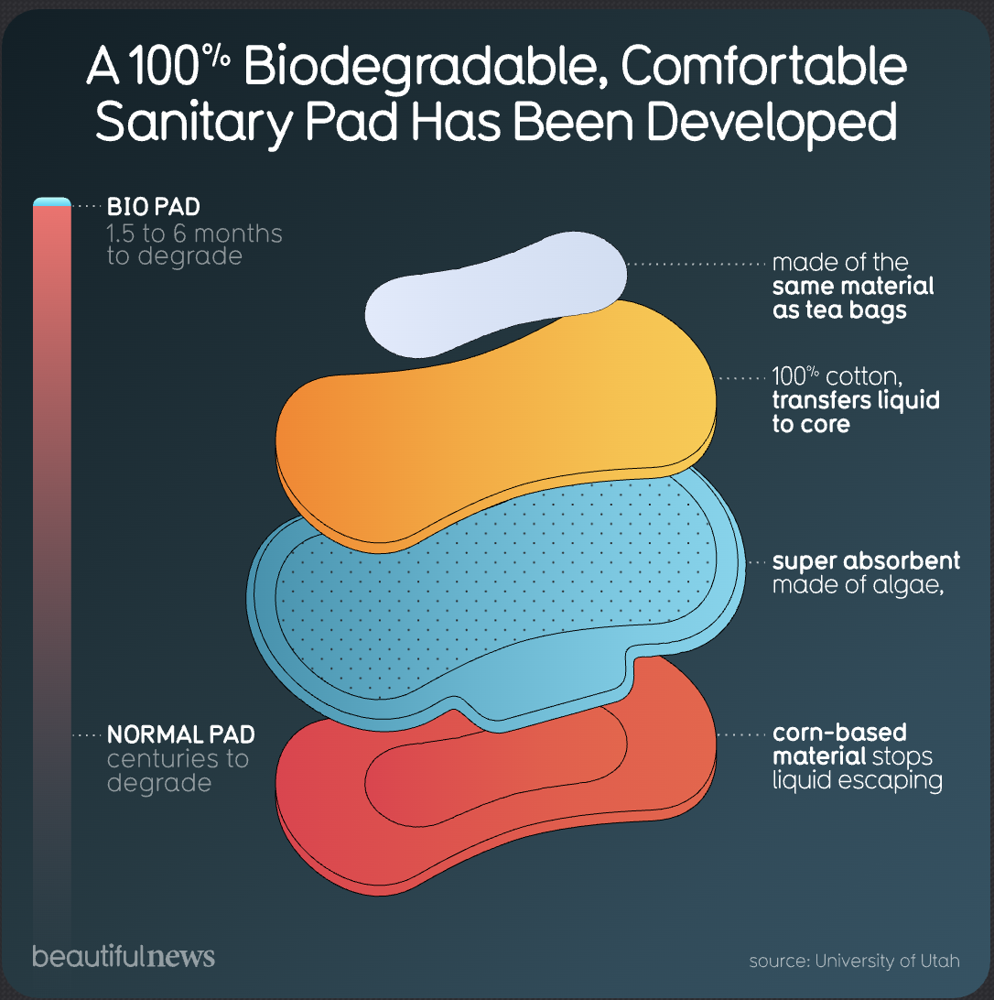

Visualization

Source: University of Utah
Critique
Information Resolution
The infographic “A 100% Biodegradable, Comfortable Sanitary Pad Has Been Developed” presents a visually clear explanation of the SHERO Pad, a biodegradable sanitary pad developed by a team at the University of Utah. Using Edward Tufte’s idea of information “resolution,” my critique will examine how much information the infographic provides and how effectively it represents the research described in the accompanying 2017 University of Utah News article.
In terms of information resolution, the infographic prioritizes clarity and accessibility over depth. The central visual shows the structure of the sanitary pad, breaking it down into four layers and labeling each material and function. This design choice is effective for helping viewers quickly understand how the product is constructed. The use of color-coded layers and short annotations makes the technical information approachable, especially for a general audience unfamiliar with materials science.
Another effective element is the degradation-time comparison shown along the left side of the graphic. By contrasting the “1.5 to 6 months” degradation time of the bio pad with the “centuries” required for a normal pad, the infographic clearly communicates its core environmental message. This comparison supports the sustainability claim in a way that is easy to understand at a glance.
However, from Tufte's perspective, the visualization provides relatively low information density. While it explains what the pad is made of, it does not explain under what conditions biodegradation occurs. The accompanying article notes that the pad can break down anywhere from 45 days to six months, but does not specify whether this assumes composting, landfill exposure, or other environmental conditions. The infographic simplifies this range into a single visual comparison without addressing these variables, which may lead viewers to assume biodegradation happens uniformly in all settings.
The infographic also omits broader context provided in the article. For example, the article cites that nearly 20 billion sanitary products are discarded in North America each year and highlights the fossil fuel energy required to produce plastic-based pads. Including even one of these statistics would significantly increase the resolution of the graphic by situating the SHERO Pad within the larger environmental problem it aims to address. As it stands, the visualization focuses almost entirely on the product itself rather than the scale of impact.
Additional Concern 1: Effects without Causes
One additional concern I chose to analyze is effects without causes. The infographic emphasizes outcomes such as absorbency, comfort, and biodegradability, but does not explain why the materials produce these effects. For example, the infographic labels the algae-based layer as “super absorbent,” but does not explain how agarose gel functions differently from synthetic hydrogels. The article provides this causal background by discussing Jeff Bates’s research into hydrogels and material experimentation, but that explanation does not appear in the visualization.
Additional Concern 2: Overreaching
Another additional concern I selected to analyze is overreaching. The headline and overall framing of the infographic suggest that a fully realized solution has already been achieved. Phrases like “has been developed” imply completion and readiness, which may lead viewers to assume the product is already widely available or fully implemented. However, the article clarifies that the SHERO Pad was still a working prototype at the time of publication, with plans for future manufacturing, distribution, and market testing.
This distinction matters because it affects how viewers interpret the scale and certainty of the solution. The infographic does not indicate that the product is in a developmental or pilot stage, nor does it address potential challenges related to manufacturing, cost, user testing, or long-term performance. By omitting these uncertainties, the visualization presents a more optimistic and finalized narrative than the data fully supports.
Conclusion
Despite these limitations, the infographic succeeds as a piece of science communication presented to the general, public audience with limited understanding of complex scientific information. Its clean layout, minimal text, and colorful visuals make the innovation easy to understand and memorable. In Tufte’s terms, the graphic favors explanation over analysis, which is appropriate for an audience-focused design but limits its completeness as a data visualization.
Overall, the infographic offers a strong introduction to the SHERO Pad but would benefit from additional contextual information, clearer assumptions about biodegradation, and a more cautious framing of its conclusions. Adding these elements would increase its information resolution while preserving its visual clarity and accessibility.